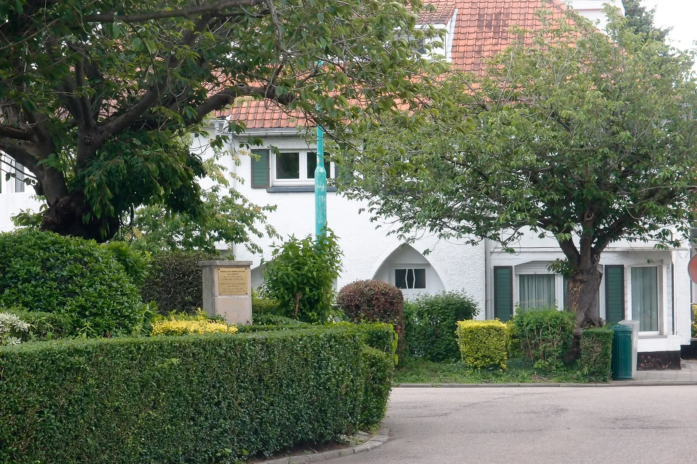
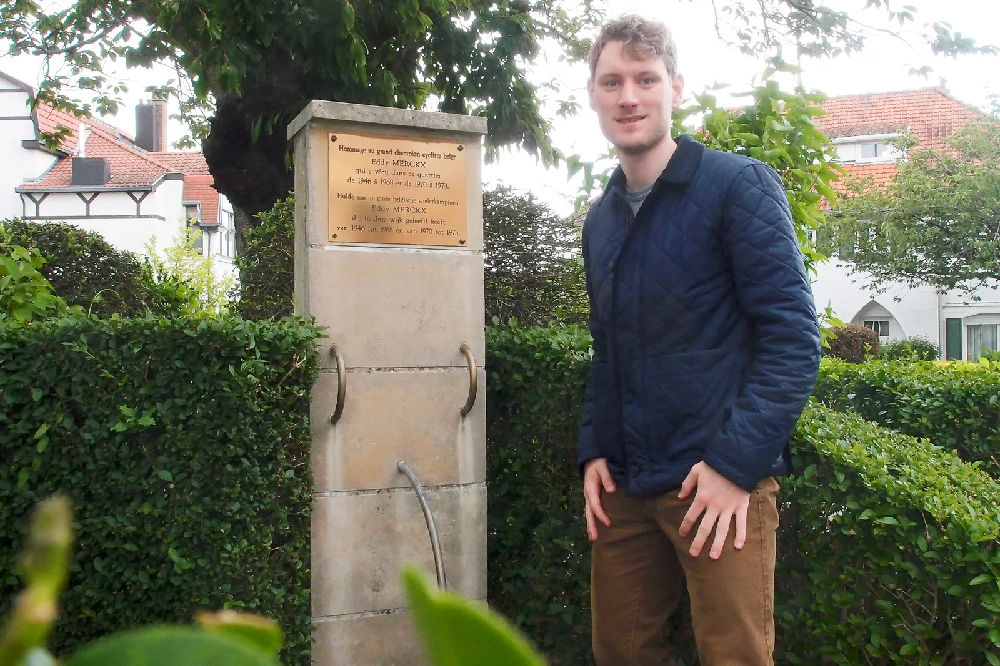
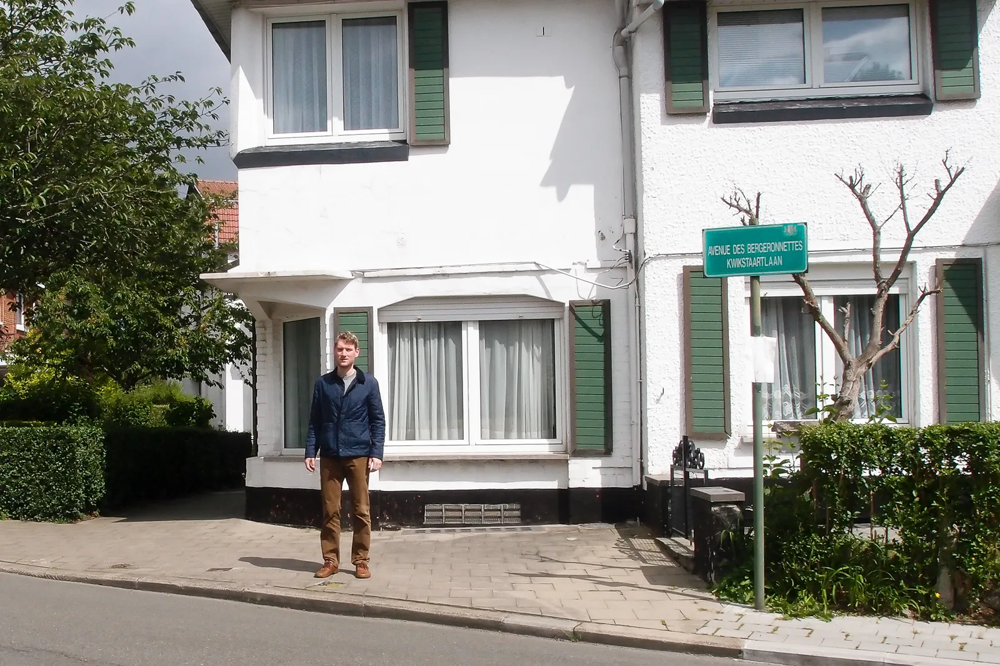
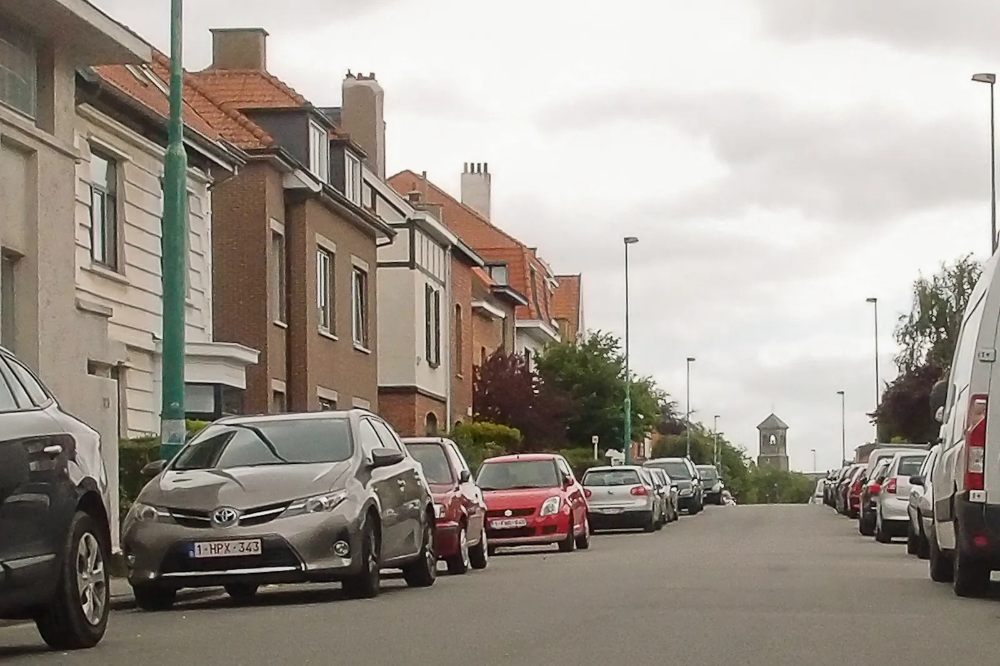
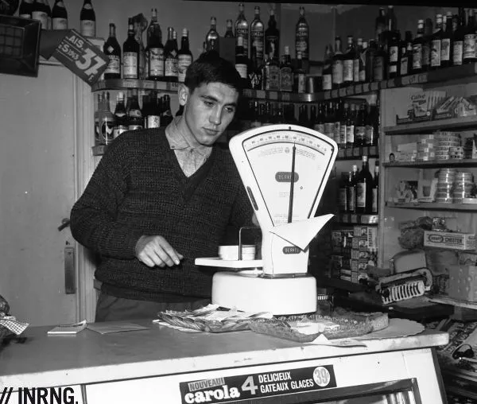

På besøg i Eddy Merkcx’s hjemstavn: Købmandsforretningen i Woluwe-Saint-Pierre

Jeg er på besøg i den by hvor Eddy Merckx som barn og cykelrytter, Woluwe-Saint-Pierre, i Bruxelles, Belgien.
Af Kasper Sørensen
Nærmere bestemt Place des Bouvreuils, et lille torv, hvor der ikke længere er forretninger, men hvor familien Merckx havde deres købmandsforretning.
De åbnede den her, da Eddy var et år gammel, og boede selv et par gader derfra.
Og som skiltet på mindestenen siger, boede Eddy Merckx selv i kvarteret i store dele af hans karriere.










Tour de France 1969 kom lige forbi
Tour de France passerede her, lige forbi købmandsforretningen, i 1969 med Eddy Merckx i spidsen for et hamrende stærkt Faema hold.
Det må have været et fantastisk moment for familie, venner ham selv og fansene.
Ganske få uger forinden var han under mystiske omstændigheder blevet smidt ud af Giroen pga. en dopingtest.
Han havde truet med at stille cyklen på hylden, men nu var han tilbage, i hans første Tour de France, og på vej igennem hjembyen på en af de indledende etaper.
Resten af den Tour er mere en velkendt for episke udfoldelser.
Det er rimelig specielt at være her, på vejene hvor en af verdens største trådte de første og sidste tråd af hver eneste træningstur.